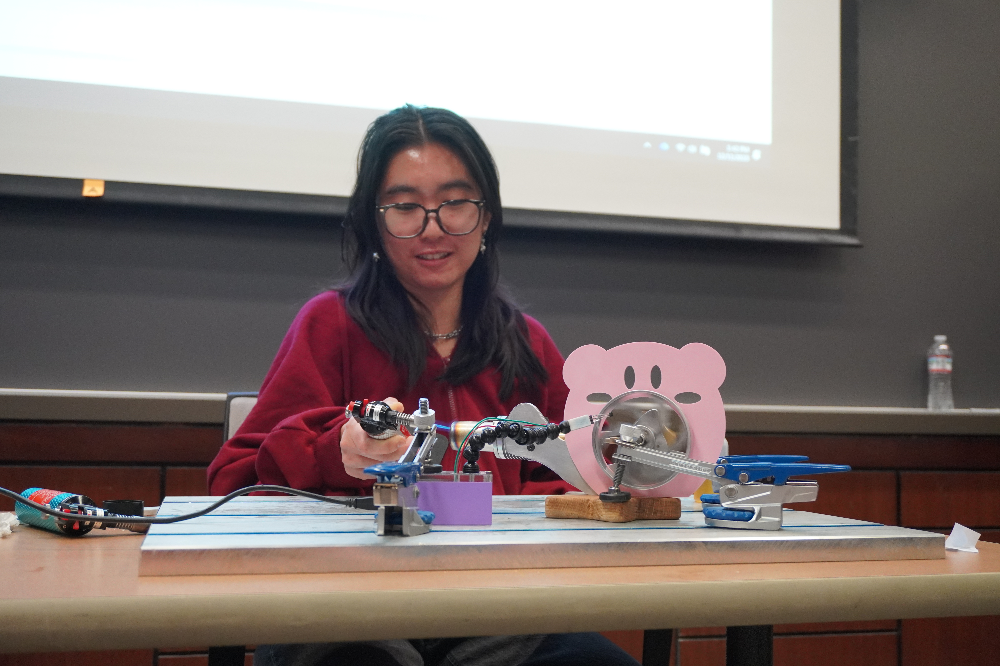
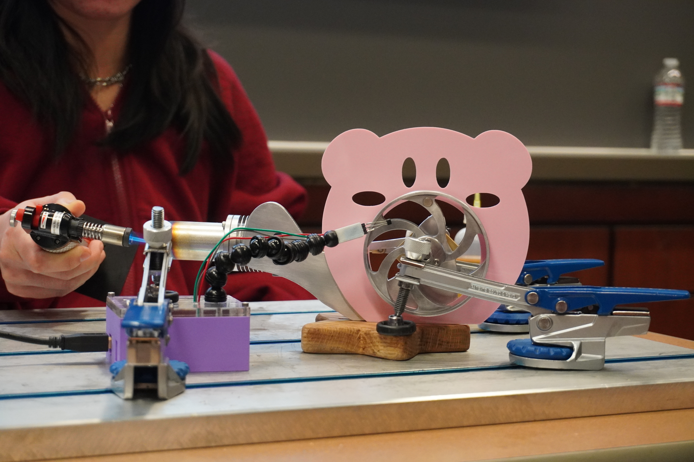
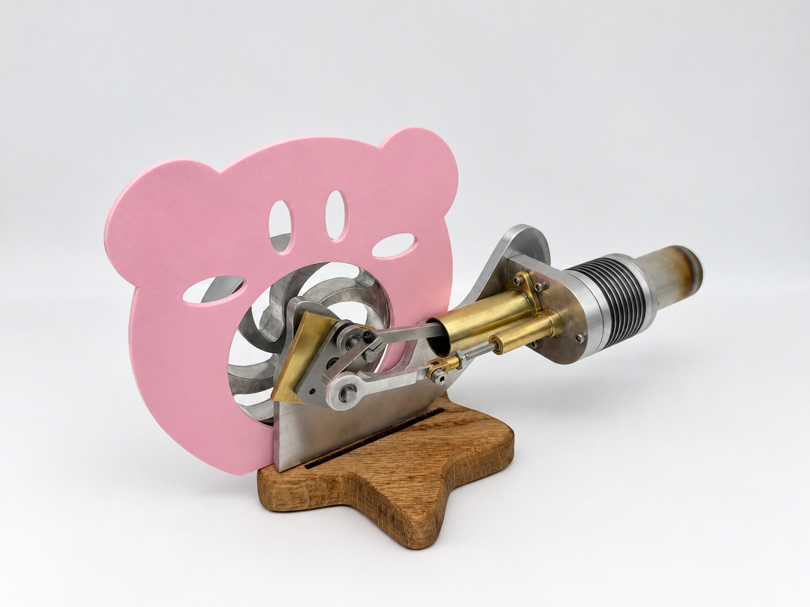
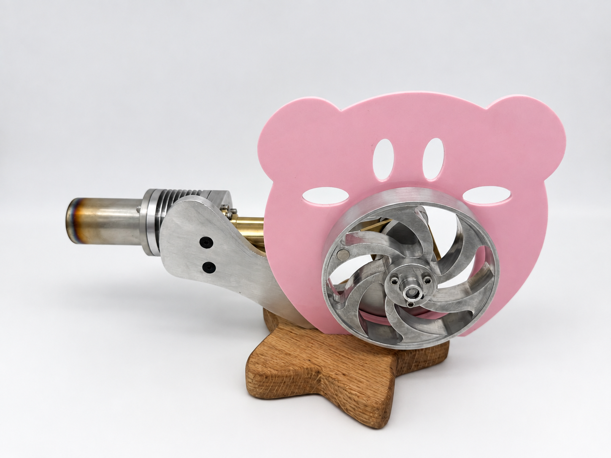

Kirby Stirling Engine
01 Description
This Kirby-inspired Stirling engine is designed to look like Kirby when he is eating something with his vacuum mouth and flying on his warp star. This project was part of a machining course I took in Fall 2025.
02 Machines/Tooling Used
- Endmills, drill bits, center drill, fly cutters, reamers, countersinks
- Lathe
- 2.5-Axis Bed Mill
- Vertical Band Saw
- Wood Router
- Dremel
- Laser Cutter
03 Software Used
- SolidWorks
- SolidWorks Visualize
- DraftSight
- Mastercam
04 Materials Machined
- C360 Brass
- 1020 Carbon Steel
- 6061 Aluminum
- 303 Stainless Steel
- Wood
- Acrylic
05 Results
Speed reached during test day: 1300-1400 rpm



